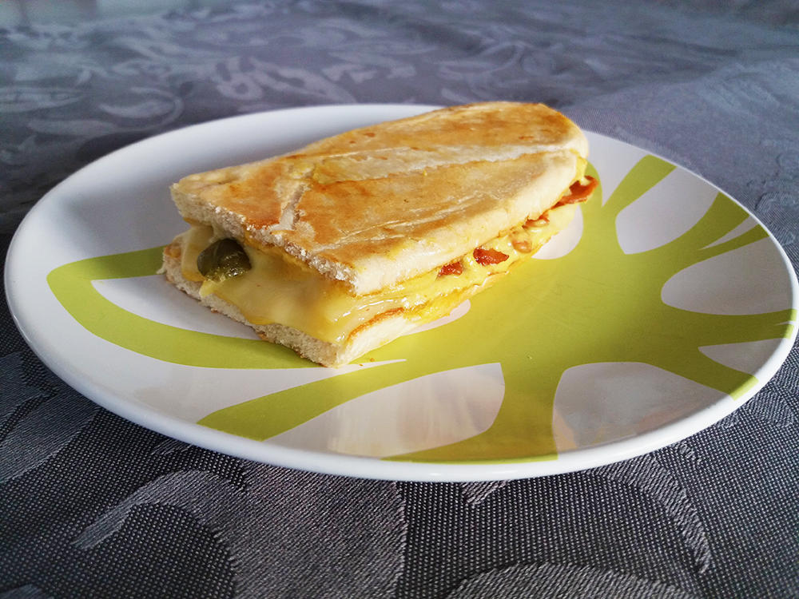

coq au vin

hutspot uit eigen land

spaghetti carbonara

chili sin carne met guacamole

cottage pie

enchiladas

cubanos

Bereidingsduur: 20 minuten
Aantal personen: 2
Ingrediënten:
1 stuk stokbrood
100 gram (vegetarische) spekjes
3 plakjes kaas
2 augurken
1 eetlepel mosterd
1 eetlepel mayonaise
0,5 theelepel chilipoeder
1 stuk stokbrood
100 gram (vegetarische) spekjes
3 plakjes kaas
2 augurken
1 eetlepel mosterd
1 eetlepel mayonaise
0,5 theelepel chilipoeder
Instructies:
1. Snijd de augurken in plakjes en bak het spek tot het knapperig wordt.
2. Snijd de stokbroden in de lengte doormidden en snijd vervolgens in twee stukken. Verwarm de broden op de zachte kant kort in de pan zodat deze kant een beetje knapperig wordt.
3. Maak de saus door de mosterd, mayonaise en chilipoeder door elkaar te mengen.
4. Neem de broodjes uit de pan en besmeer de gesneden kant royaal met de saus. Beleg de broodjes door eerst de onderkant van het brood te nemen. Leg hierop de kaas, ham, augurken, weer een plak kaas en vervolgens de bovenkant van het brood.
5. Leg de broodjes in de warme grillpan en zet er een zware pan op zodat de broodjes plat worden. Draai ze af en toe om zodat ze niet verbranden. De broodjes zijn klaar wanneer de kaas begint te smelten.
1. Snijd de augurken in plakjes en bak het spek tot het knapperig wordt.
2. Snijd de stokbroden in de lengte doormidden en snijd vervolgens in twee stukken. Verwarm de broden op de zachte kant kort in de pan zodat deze kant een beetje knapperig wordt.
3. Maak de saus door de mosterd, mayonaise en chilipoeder door elkaar te mengen.
4. Neem de broodjes uit de pan en besmeer de gesneden kant royaal met de saus. Beleg de broodjes door eerst de onderkant van het brood te nemen. Leg hierop de kaas, ham, augurken, weer een plak kaas en vervolgens de bovenkant van het brood.
5. Leg de broodjes in de warme grillpan en zet er een zware pan op zodat de broodjes plat worden. Draai ze af en toe om zodat ze niet verbranden. De broodjes zijn klaar wanneer de kaas begint te smelten.